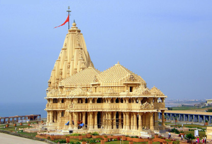
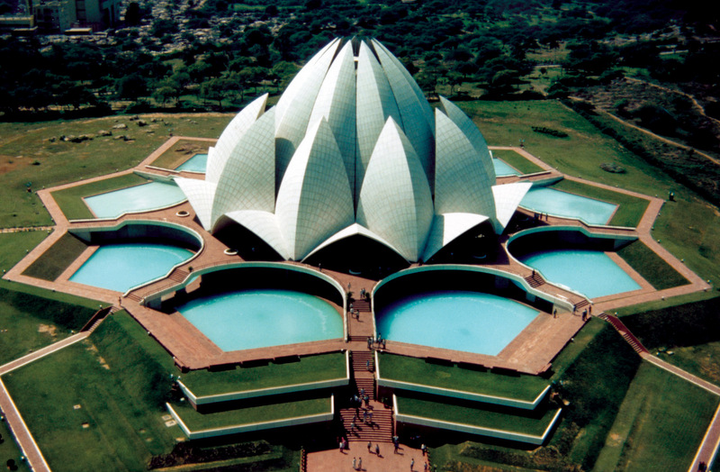
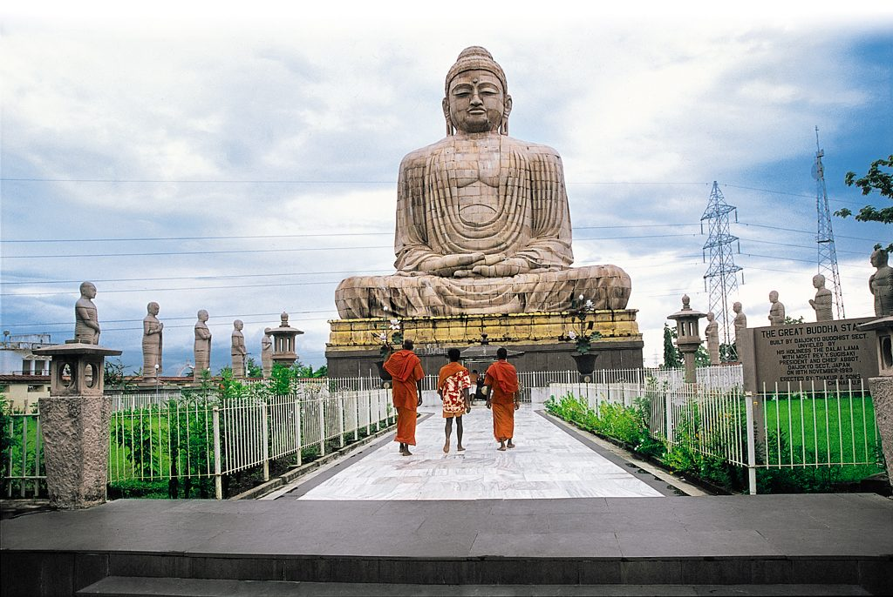

S A F A R I
INDIA'S FAMOUS RELIGIOUS PLACES

GOLDEN TEMPLE
The Harmandir Sahib, meaning "abode of God", also known as Golden Temple, is a Gurdwara located in the city of Amritsar, Punjab, India. It is the preeminent spiritual site of Sikhism
The Gurdwara is built around a man-made pool that was completed by Guru Ram Das in 1577. Guru Arjan, the fifth Guru of Sikhism, requested Sai Mir Mian Mohammed, a Muslim Pir of Lahore, to lay its foundation stone in 1589.
The Gurdwara is spiritually the most significant shrine in Sikhism.
The Harmandir Sahib is an open house of worship for all men and women, from all walks of life and faith. It has a square plan with four entrances, has a circumambulation path around the pool. The complex is a collection of buildings around the sanctum and the pool.
One of these is Akal Takht, the chief center of religious authority of Sikhism. Additional buildings include a clock tower, the offices of Gurdwara Committee, a Museum and a langar – a free Sikh community run kitchen that serves a simple vegetarian meal to all visitors without discrimination.
Over 100,000 people visit the holy shrine daily for worship. The Gurdwara complex has been nominated as a UNESCO World Heritage Site.

SHREE DWARKADHISH
The Dwarkadhish temple, also known as the Jagat Mandir and occasionally spelled Dwarakadheesh, is a Hindu temple dedicated to the god Krishna, who is worshiped here by the name Dwarkadhish, or 'King of Dwarka'.
The temple is located at Dwarka, Gujarat, India. The main shrine of the five storied building, supported by 72 pillars, is known as Jagat Mandir or Nija Mandir, archaeological findings suggest it to be 2,000 - 2,200 years old
According to tradition, the original temple was believed to have been built by Krishna's grandson, Vajranabha, over the hari-griha (Krishna's residential place). The original structure was destroyed by Mahmud Begada in 1472, and subsequently rebuilt in the 15th-16th century.
The original temple had been built by Krishna’s grandson over the Harigraha, the palace of Krishna. The temple has an assembly hall or audience hall. There are two important entrances to the temple, one is the main entry door which is called the Moksha Dwar (meaning "Door to Salvation") and the exit door which is known as the Swarga Dwar (meaning "Gate to Heaven").
The temple was enlarged in the 15th- 16th century.

LOTUS TEMPLE
The Lotus Temple, located in Delhi, India, is a Baháʼí House of Worship that was dedicated in December 1986.
Notable for its flowerlike shape, it has become a prominent attraction in the city.
Like all Baháʼí Houses of Worship, the Lotus Temple is open to all, regardless of religion or any other qualification.
The building is composed of 27 free-standing marble-clad "petals" arranged in clusters of three to form nine sides, with nine doors opening onto a central hall with a height of slightly over 34.27 metres and a capacity of 2,500 people.
The Lotus Temple has won numerous architectural awards and has been featured in many newspaper and magazine articles. A 2001 CNN report referred to it as the most visited building in the world.
The Baháʼí Faith teaches that a Baháʼí House of Worship should be a space for people of all religions to gather, reflect, and worship.

BODH GAYA
Bodh Gaya is a religious site and place of pilgrimage associated with the Mahabodhi Temple Complex in Gaya district in the Indian state of Bihar.
It is famous as it is the place where Gautama Buddha is said to have attained Enlightenment (Pali: bodhi) under what became known as the Bodhi Tree. Since antiquity, Bodh Gaya has remained the object of pilgrimage and veneration for both Hindus and Buddhists.
Bodh Gaya is the most holy place for Buddhists. Situated by the bank of river Neranjana the place was then known as Uruwela. King Ashoka was the first to build a temple here.

RISHIKESH
Rishikesh, also known as Hrishikesh. Located in the foothills of the Himalayas in northern India, it is known as the "Gateway to the Garhwal Himalayas" and "Yoga Capital of the World".
It is known as the pilgrimage town and regarded as one of the holiest places to Hindus.
The city has hosted the annual International Yoga Festival on the first week of March since 1989.
Rishikesh is a city in India’s northern state of Uttarakhand, in the Himalayan foothills beside the Ganges River.
The river is considered holy, and the city is renowned as a center for studying yoga and meditation.
Temples and ashrams (centers for spiritual studies) line the eastern bank around Swarg Ashram, a traffic-free, alcohol-free and vegetarian enclave upstream from Rishikesh town.